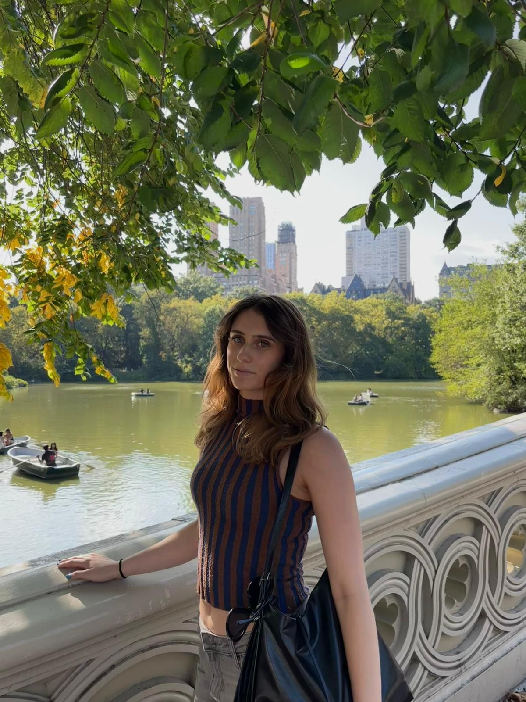

Prezentare generala
Bun venit pe pagina mea personala. Sunt studenta in anul 3 la Facultatea de stiinte economice si gestiunea afacerilor, profilul informatica economica.
Anul 3 este ultimul an pentru aceasta specializare si urmeaza sa ma pregatesc pentru lucrarea de licenta.

Hobby-uri
- Web Design-ul
- Calatoritul
- Baschetul
- Handbalul
Obiective pentru acest an
- Sa termin facultatea
- Sa ma angajez
Mai multe informatii despre mine pot fi gasite pe LinkedIn.
Orarul meu saptamanal
| Zi | Activitate | Ora |
|---|---|---|
| Luni | Medii de programare | 10:00 - 12:00 |
| Laborator Web | 14:00 - 16:00 | |
| Marti | Inteligenta Artificiala | 8:00 - 10:00 |
| Algoritmi si Structuri de Date | 10:00 - 12:00 | |
| Baze de Date | 14:00 - 16:00 | |
| Miercuri | Ingineria produselor software | 14:00 - 16:00 |